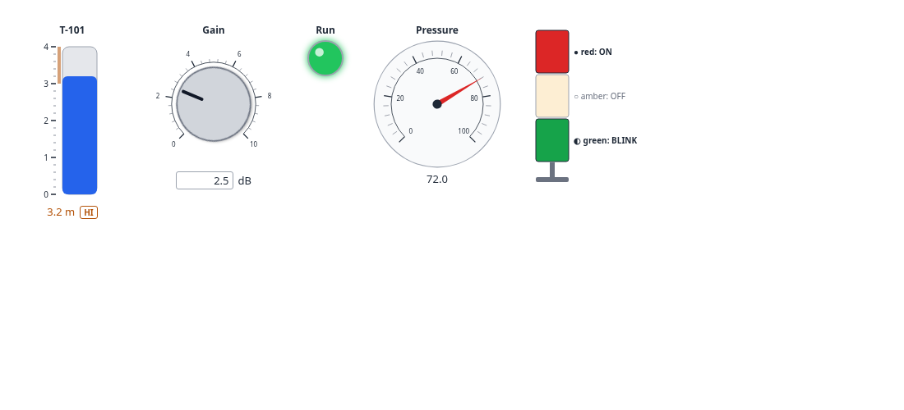

AnywidgetInstruments.jl
Instrumentation widgets for Julia
Knobs, gauges, tanks, LEDs, strip charts, alarms and supervisory objects, from the front end of anywidget-instruments. No Python, no Node.js.
52 widgets
Every concrete widget of anywidget-instruments has a constructor, Tank(3.2; max = 4), documented from the trait contract.
Checked traits
Unknown traits and invalid values fail early with an ArgumentError; numbers are clamped like the front end does.
Standalone HTML
Widgets display in Documenter, VS Code, Jupyter or any HTML page, self-contained.
Kaimon Slate
Bind widgets with @bind through SlateAFM; drive them from Julia with messages and binary buffers.
Shared rules
Alarm levels with deadband, value coercion and value labels, checked against the parity cases of the Python and TypeScript sides.
Specified
EARS requirements with MoSCoW priorities, each covered by a test item.

AnywidgetInstruments.jl is the Julia host of anywidget-instruments, instrumentation widgets for computational notebooks built on anywidget. The package ships the widgets' front-end module and their trait contract: a widget is a class and a dictionary of traits checked against that contract.
using AnywidgetInstruments
gain = Knob(2.5; min = 0, max = 10, step = 0.1, unit = "dB", label = "Gain")
level = Tank(1.2; max = 5, unit = "m", lo = 0.5, hi = 4.5, show_limits = true, label = "Level")
html_page("station.html", gain, level, LED(true; label = "Run"))These widgets are for monitoring, teaching and prototyping. They are not a protection layer and never replace the safety functions of a process. See the safety notice of anywidget-instruments.